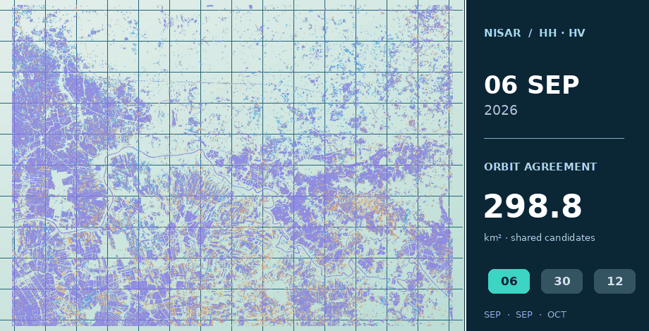

Observe
NASA–ISRO NISAR L2 GCOV, HH/HV, from ascending and descending passes across three acquisition dates.
Compare two NISAR radar perspectives across three dates. Discover how combining them reveals a more complete view of surface water.

Select an observation, compare radar perspectives and examine changes across the same geographic area.
Four strategies assessed on the same 162 selected Sentinel-2 optical-reference samples for 30 September 2026.
The union of ascending and descending classifications produces the highest agreement with the automated optical reference in the current comparison.
Descending’s F1 exceeds ascending by 0.048 on this sample; the paired interval includes zero.
A focused workflow connects orbital geometry, water-state mapping and a consistent optical comparison.
NASA–ISRO NISAR L2 GCOV, HH/HV, from ascending and descending passes across three acquisition dates.
Orbit-specific water candidates and shared detections mapped on a consistent 10 m geospatial grid.
Strategies assessed against 162 selected automated Sentinel-2 spectral labels near 30 September.
Interpretation: The comparison measures agreement with automated Sentinel-2 optical labels for visible surface water. Dates 06 September, 30 September and 12 October describe radar water-state observations; these maps do not independently establish flood onset.